Networking Security Networking Security Networking Security Security Networking Security Networking Security Networking Charlie Kaufman Radia Perlman Mike Speciner Prentice Hall Network Security: Private Communication in a Public World, Second Edition
3.3. Data Encryption Standard (DES)
DES was published in 1977 by the National Bureau of Standards (since renamed to the National Institute of Standards and Technology) for use in commercial and unclassified (hmm...) U.S. Government applications. It was designed by IBM based on their own Lucifer cipher and input from NSA. DES uses a 56-bit key, and maps a 64-bit input block into a 64-bit output block. The key actually looks like a 64-bit quantity, but one bit in each of the 8 octets is used for odd parity on each octet. Therefore, only 7 of the bits in each octet are actually meaningful as a key.
DES is efficient to implement in hardware but relatively slow if implemented in software. Although making software implementations difficult was not a documented goal of DES, people have asserted that DES was specifically designed with this in mind, perhaps because this would limit its use to organizations that could afford hardware-based solutions, or perhaps because it made it easier to control access to the technology. At any rate, advances in CPUs have made it feasible to do DES in software. For instance, a 500-MIP CPU can encrypt at about 30 Koctets per second (and perhaps more depending on the details of the CPU design and the cleverness of the implementation). This is adequate for many applications.
|
Use of a 56-bit key is one of the most controversial aspects of DES. Even before DES was adopted, people outside of the intelligence community complained that 56 bits provided inadequate security [DENN82, DIFF76a, DIFF77, HELL79]. So why were only 56 of the 64 bits of a DES key used in the algorithm? The disadvantage of using 8 bits of the key for parity checking is that it makes DES considerably less secure (256 times less secure against exhaustive search).
OK, so what is the advantage of using 8 bits of the key for parity? Well, uh, let's say you receive a key electronically, and you want to sanity-check it to see if it could actually be a key. If you check the parity of the quantity, and it winds up not having the correct parity, then you'll know something went wrong.
There are two problems with this reasoning. One is that there is a 1 in 256 chance (given the parity scheme) that even if you were to get 64 bits of garbage, that the result will happen to have the correct parity and therefore look like a key. That is way too large a possibility of error for it to afford any useful protection to any application. The other problem with the reasoning is that there is nothing terribly bad about getting a bad key. You'll discover the key is bad when you try to use it for encrypting or decrypting.
The key, at 56 bits, is pretty much universally acknowledged to be too small to be secure. Perhaps one might argue that a smaller key is an advantage because it saves storage but that argument doesn't hold since nobody does data compression on the 64-bit keys in order to fit them into 56 bits. So what benefits are there to usurping 8 bits for parity that offset the loss in security?
People (not us, surely!) have suggested that our government consciously decided to weaken the security of DES just enough so that NSA would be able to break it. We would like to think there is an alternative explanation, but we have never heard a plausible one proposed.
|
Advances in semiconductor technology make the key-length issue more critical. Chip speeds have caught up so that DES keys can be broken with a bit of cleverness and exhaustive search. Perhaps a 64-bit key might have extended its useful lifetime by a few years. Given hardware price/performance improving about 40% per year, keys must grow by about 1 bit every 2 years. Assuming 56 bits was just sufficient in 1979 (when DES was standardized), 64 bits was about right in 1995, and 128 bits would suffice until 2123.
|
Suppose you have a single block of <plaintext, ciphertext>. Breaking DES in this case would mean finding a key that maps that plaintext to that ciphertext. With DES implemented in software, it would take on the order of half a million MIP-years, through brute force, to find the key. (Is it possible to find the "wrong" key, given a particular pair? Might two different keys map the same plaintext to the same ciphertext? How many keys on the average map a particular pair? See Homework Problem 3.)
Often the attacker does not have a <plaintext, ciphertext> block. Instead the attacker has a reasonable amount of ciphertext only. It might be known, for example, that the encrypted data is likely to be 7-bit ASCII. In that case, it is still just about as efficient to do brute-force search. The ciphertext is decrypted with the guessed key, and if all the 8th bits are zero (which will happen with an incorrect key with probability 1 in 256), then another block is decrypted. After several (say ten) blocks are decrypted, and the result always appears to be 7-bit ASCII, the key has a high probability of being correct.
Current commercial DES chips do not lend themselves to doing exhaustive key searchÂthey allow encrypting lots of data with a particular key. The relative speed of key loading is much less than the speed of encrypting data. However, it is straightforward to design and manufacture a key-searching DES chip.
In 1977, Diffie and Hellman [DIFF77] did a detailed analysis of what it would cost to build a DES-breaking engine and concluded that for $20 million you could build a million-chip machine that could find a DES key in twelve hours (given a <plaintext, ciphertext> pair). In 1998, EFF (Electronic Frontier Foundation) [EFF98] built a special-purpose DES-breaking engine, called the EFF DES Cracker, for under $250K. It was designed to find a DES key in 4.5 days. With the design done, the cost of replicating the engine was under $150K.
There are published papers [BIHA93] claiming that less straightforward attacks can break DES faster than simply searching the key space. However, these attacks involve the premise, unlikely in real-life situations, that the attacker can choose lots of plaintext and obtain the corresponding ciphertext.
Still it is possible to encrypt multiple times with different keys (see §4.4 Multiple Encryption DES). It is generally believed that DES with triple encryption is 256 times as difficult to crack and therefore will be secure for the foreseeable future.
|
3.3.1. DES Overview
DES is quite understandable, and has some very elegant tricks. Let's start with the basic structure of DES (Figure 3-2).
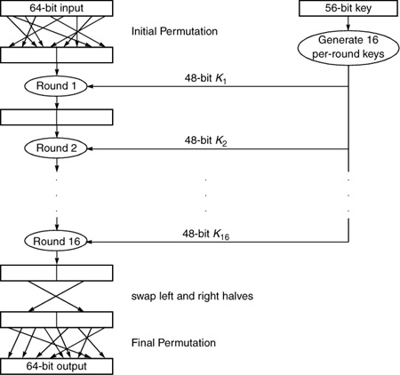
The 64-bit input is subjected to an initial permutation to obtain a 64-bit result (which is just the input with the bits shuffled). The 56-bit key is used to generate sixteen 48-bit per-round keys, by taking a different 48-bit subset of the 56 bits for each of the keys. Each round takes as input the 64-bit output of the previous round, and the 48-bit per-round key, and produces a 64-bit output. After the 16th round, the 64-bit output has its halves swapped and is then subjected to another permutation, which happens to be the inverse of the initial permutation.
That is the overview of how encryption works. Decryption works by essentially running DES backwards. To decrypt a block, you'd first run it through the initial permutation to undo the final permutation (the initial and final permutations are inverses of each other). You'd do the same key generation, though you'd use the keys in the opposite order (first use K16, the key you generated last). Then you run 16 rounds just like for encryption. Why this works will be explained when we explain what happens during a round. After 16 rounds of decryption, the output has its halves swapped and is then subjected to the final permutation (to undo the initial permutation).
To fully specify DES, we need to specify the initial and final permutations, how the per round keys are generated, and what happens during a round. Let's start with the initial and final permutations of the data.
3.3.2. The Permutations of the Data
DES performs an initial and final permutation on the data, which do essentially nothing to enhance DES's security (see Why permute? on page 67). The most plausible reason for these permutations is to make DES less efficient to implement in software.
The way the permutations are specified in the DES spec is as follows:
Initial Permutation (IP) | Final Permutation (IP-1) | 58 | 50 | 42 | 34 | 26 | 18 | 10 | 2 | 40 | 8 | 48 | 16 | 56 | 24 | 64 | 32 | 60 | 52 | 44 | 36 | 28 | 20 | 12 | 4 | 39 | 7 | 47 | 15 | 55 | 23 | 63 | 31 | 62 | 54 | 46 | 38 | 30 | 22 | 14 | 6 | 38 | 6 | 46 | 14 | 54 | 22 | 62 | 30 | 64 | 56 | 48 | 40 | 32 | 24 | 16 | 8 | 37 | 5 | 45 | 13 | 53 | 21 | 61 | 29 | 57 | 49 | 41 | 33 | 25 | 17 | 9 | 1 | 36 | 4 | 44 | 12 | 52 | 20 | 60 | 28 | 59 | 51 | 43 | 35 | 27 | 19 | 11 | 3 | 35 | 3 | 43 | 11 | 51 | 19 | 59 | 27 | 61 | 53 | 45 | 37 | 29 | 21 | 13 | 5 | 34 | 2 | 42 | 10 | 50 | 18 | 58 | 26 | 63 | 55 | 47 | 39 | 31 | 23 | 15 | 7 | 33 | 1 | 41 | 9 | 49 | 17 | 57 | 25 |
The numbers in the above tables specify the bit numbers of the input to the permutation. The order of the numbers in the tables corresponds to the output bit position. So for example, the initial permutation moves input bit 58 to output bit 1 and input bit 50 to output bit 2.
The permutation is not a random-looking permutation. Figure 3-3 pictures it. The arrows indicate the initial permutation. Reverse the arrows to get the final permutation. We hope you appreciate the time we spent staring at the numbers and discovering this completely useless structure.
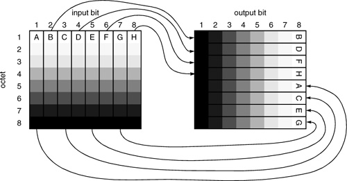
The input is 8 octets. The output is 8 octets. The bits in the first octet of input get spread into the 8th bits of each of the octets. The bits in the second octet of input get spread into the 7th bits of all the octets. And in general, the bits of the ith octet get spread into the (9-i)th bits of all the octets. The pattern of spreading of the 8 bits in octet i of the input among the output octets is that the even-numbered bits go into octets 1Â4, and the odd-numbered bits go into octets 5Â8. Note that if the data happens to be 7-bit ASCII, with the top bit set to zero, then after the permutation the entire 5th octet will be zero. Since the permutation appears to have no security value, it seems nearly certain that there is no security significance to this particular permutation.
|
Why can't the initial and final permutations of the data be of security value? Well, suppose they were important, i.e., if DES did not have them it would be possible to break DES. Let's call a modified DES that does not have the initial and final permutation EDS. Let's say we can break EDS, i.e., given a <plaintext,ciphertext> EDS pair, we can easily calculate the EDS key that converts the plaintext into the ciphertext. In that case, we can easily break DES as well. Given a DES <plaintext,ciphertext> pair <m,c>, we simply do the inverse of the initial permutation (i.e. the final permutation) on m to get m', and the inverse of the final permutation (i.e. the initial permutation) on c to get c', and feed <m',c'> to our EDS-breaking code. The resulting EDS key will work as the DES key for <m,c>.
Note that when multiple encryptions of DES are being performed, the permutation might have some value. However, if encryption with key1 is followed by encryption with key2, then the final permutation following encryption with key1 will cancel the initial permutation for key2. That is one of the reasons people discuss alternating encrypt operations with decrypt operations (see §4.4 Multiple Encryption DES).
In §3.3.3 Generating the Per-Round Keys, we'll see there is also a permutation of the key. It also has no security value (by a similar argument).
|
3.3.3. Generating the Per-Round Keys
Next we'll specify how the sixteen 48-bit per-round keys are generated from the DES key. The DES key looks like it's 64 bits long, but 8 of the bits are parity. Let's number the bits of the DES key from left to right as 1, 2,...64. Bits 8, 16,...64 are the parity bits. DES performs a function, which we are about to specify, on these 64 bits to generate sixteen 48-bit keys, which are K1, K2,...K16.
First it does an initial permutation on the 56 useful bits of the key, to generate a 56-bit output, which it divides into two 28-bit values, called C0 and D0. The permutation is specified as
C0 | D0 | 57 | 49 | 41 | 33 | 25 | 17 | 9 | 63 | 55 | 47 | 39 | 31 | 23 | 15 | 1 | 58 | 50 | 42 | 34 | 26 | 18 | 7 | 62 | 54 | 46 | 38 | 30 | 22 | 10 | 2 | 59 | 51 | 43 | 35 | 27 | 14 | 6 | 61 | 53 | 45 | 37 | 29 | 19 | 11 | 3 | 60 | 52 | 44 | 36 | 21 | 13 | 5 | 28 | 20 | 12 | 4 |
The way to read the table above is that the leftmost bit of the output is obtained by extracting bit 57 from the key. The next bit is bit 49 of the key, and so forth, with the final bit of D0 being bit 4 of the key. Notice that none of the parity bits (8, 16,...64) is used in C0 or D0.
This permutation is not random. Figure 3-4 pictures it. Feel free to draw in any arrows or other graphic aids to make it clearer.
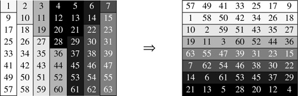
The initial and final permutations of the bits in the key have no security value (just like the initial and final permutations of the data), so the permutations didn't have to be randomÂthe identity permutation would have done nicely.
Now the generation of the Ki proceeds in 16 rounds (see Figure 3-5). The number of bits shifted is different in the different rounds. In rounds 1, 2, 9, and 16, it is a single-bit rotate left (with the bit shifted off the left end carried around and shifted into the right end). In the other rounds, it is a two-bit rotate left.
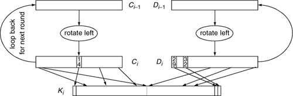
The permutations in this case are likely to be of some security value.
The permutation of Ci that produces the left half of Ki is the following. Note that bits 9, 18, 22, and 25 are discarded.
permutation to obtain the left half of Ki: | 14 | 17 | 11 | 24 | 1 | 5 | 3 | 28 | 15 | 6 | 21 | 10 | 23 | 19 | 12 | 4 | 26 | 8 | 16 | 7 | 27 | 20 | 13 | 2 |
The permutation of the rotated Di-1 that produces the right half of Ki is as follows (where the bits of the rotated Di-1 are numbered 29, 30,...56, and bits 35, 38, 43, and 54 are discarded).
permutation to obtain the right half of Ki: | 41 | 52 | 31 | 37 | 47 | 55 | 30 | 40 | 51 | 45 | 33 | 48 | 44 | 49 | 39 | 56 | 34 | 53 | 46 | 42 | 50 | 36 | 29 | 32 |
Each of the halves of Ki is 24 bits, so Ki is 48 bits long.
3.3.4. A DES Round
Now let's look at what a single round of DES does. Figure 3-6 shows both how encryption and decryption work.
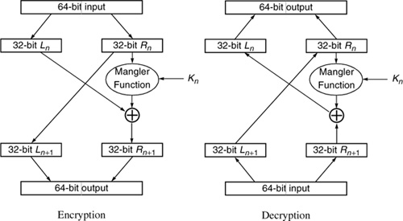
In encryption, the 64-bit input is divided into two 32-bit halves called Ln and Rn. The round generates as output 32-bit quantities Ln+1 and Rn+1. The concatenation of Ln+1 and Rn+1 is the 64-bit output of the round.
Ln+1 is simply Rn. Rn+1 is obtained as follows. First Rn and Kn are input to what we call a mangler function, which outputs a 32-bit quantity. That quantity is  'd with Ln to obtain the new Rn+1. The mangler takes as input 32 bits of the data plus 48 bits of the key to produce a 32-bit output. 'd with Ln to obtain the new Rn+1. The mangler takes as input 32 bits of the data plus 48 bits of the key to produce a 32-bit output.
Given the above, suppose you want to run DES backward, i.e. to decrypt something. Suppose you know Ln+1 and Rn+1. How do you get Ln and Rn?
Well, Rn is just Ln+1. Now you know Rn, Ln+1, Rn+1 and Kn. You also know that Rn+1 equals Ln mangler(Rn, Kn). You can compute mangler(Rn, Kn), since you know Rn and Kn. Now that with Rn+1. The result will be Ln. Note that the mangler is never run backwards. DES is elegantly designed to be reversible without constraining the mangler function to be reversible. This design is due to Feistel [FEIS73]. Theoretically the mangler could map all values to zero, and it would still be possible to run DES backwards, but having the mangler function map all functions to zero would make DES pretty unsecure (see Homework Problem 5).
If you examine Figure 3-6 carefully, you will see that decryption is identical to encryption with the 32-bit halves swapped. In other words, feeding Rn+1|Ln+1 into round n produces Rn|Ln as output.
3.3.5. The Mangler Function
The mangler function takes as input the 32-bit Rn, which we'll simply call R, and the 48-bit Kn, which we'll call K, and produces a 32-bit output which, when 'd with Ln, produces Rn+1 (the next R).
The mangler function first expands R from a 32-bit value to a 48-bit value. It does this by breaking R into eight 4-bit chunks and then expanding each of those chunks to 6 bits by taking the adjacent bits and concatenating them to the chunk. The leftmost and rightmost bits of R are considered adjacent.
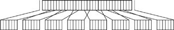
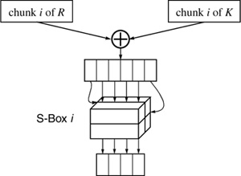
The 48-bit K is broken into eight 6-bit chunks. Chunk i of the expanded R is 'd with chunk i of K to yield a 6-bit output. That 6-bit output is fed into an S-box, a substitution which produces a 4-bit output for each possible 6-bit input. Since there are 64 possible input values (6 bits) and only 16 possible output values (4 bits), the S-box clearly maps several input values to the same output value. As it turns out, there are exactly four input values that map to each possible output value. There's even more pattern to it than that. Each S-box could be thought of as four separate 4-bit to 4-bit S-boxes, with the inner 4 bits of the 6-bit chunk serving as input, and the outer 2 bits selecting which of the four 4-bit S-boxes to use. The S-boxes are specified as follows:
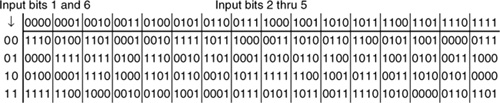
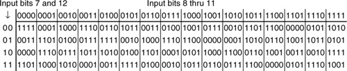
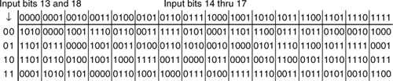
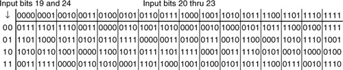
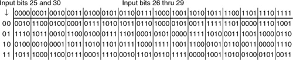
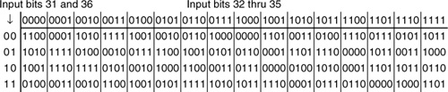
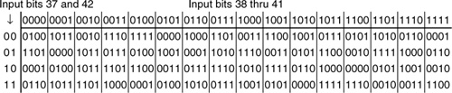
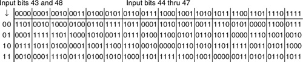
The 4-bit output of each of the eight S-boxes is combined into a 32-bit quantity whose bits are then permuted. A permutation at this point is of security value to DES in order to ensure that the bits of the output of an S-box on one round of DES affects the input of multiple S-boxes on the next round. Without the permutation, an input bit on the left would mostly affect the output bits on the left.
The actual permutation used is very random looking (we can't find any nice patterns to make the permutation easy to visualizeÂit's possible a non-random looking permutation would not be as secure).
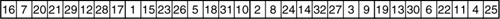
The way to read this is that the 1st bit of output of the permutation is the 16th input bit, the 2nd output bit is the 7th input bit,...the 32nd output bit is the 25th input bit.
3.3.6. Weak and Semi-Weak Keys
We include this section mainly for completeness. There are sixteen DES keys that the security community warns people against using, because they have strange properties. But the probability of randomly generating one of these keys is only 16/256, which in our opinion is nothing to worry about. It's probably equally insecure to use a key with a value less than a thousand, since an attacker might be likely to start searching for keys from the bottom.
Remember from §3.3.3 Generating the Per-Round Keys that the key is subjected to an initial permutation to generate two 28-bit quantities, C0 and D0. The sixteen suspect keys are ones for which C0 and D0 are one of the four values: all ones, all zeroes, alternating ones and zeroes, alternating zeroes and ones. Since there are four possible values for each half, there are sixteen possibilities in all. The four weak keys are the ones for which each of C0 and D0 are all ones or all zeroes. Weak keys are their own inverses. The remaining twelve keys are the semi-weak keys. Each is the inverse of one of the others.
3.3.7. What's So Special About DES?
DES is actually quite simple, as is IDEA (which we'll explain next). One gets the impression that anyone could design a secret key encryption algorithm. Just take the bits, shuffle them, shuffle them some more, and you have an algorithm. In fact, however, these things are very mysterious. For example, the S-boxes seem totally arbitrary. Did anyone put any thought into exactly what substitutions each S-box should perform? Well, Biham and Shamir [BIHA91] have shown that with an incredibly trivial change to DES consisting of swapping S-box 3 with S-box 7, DES is about an order of magnitude less secure in the face of a specific (admittedly not very likely) attack.
It is unfortunate that the design process for DES was not more public. We don't know if the particular details were well-chosen for strength, whether someone flipped coins, for instance, to construct the S-boxes, or even whether the particular details were well-chosen to have some sort of weakness that could only be exploited by someone involved in the design process. The claim for why the design process was kept secret, and it is a plausible claim, is that the DES designers knew about many kinds of cryptanalytic attacks, and that they specifically designed DES to be strong against all the ones they knew about. If they publicized the design process, they'd have to divulge all the cryptanalytic attacks they knew about, which would then further educate potential bad guys, which might make some cryptographic standards that were designed without this knowledge vulnerable.
In the hash algorithms designed by Ron Rivest (MD2, MD4, MD5), in order to eliminate the suspicion that they might be specifically chosen to have secret weaknesses, constants that should be reasonably random were chosen through some demonstrable manner, for instance by being the digits of an irrational number such as
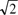
.
|